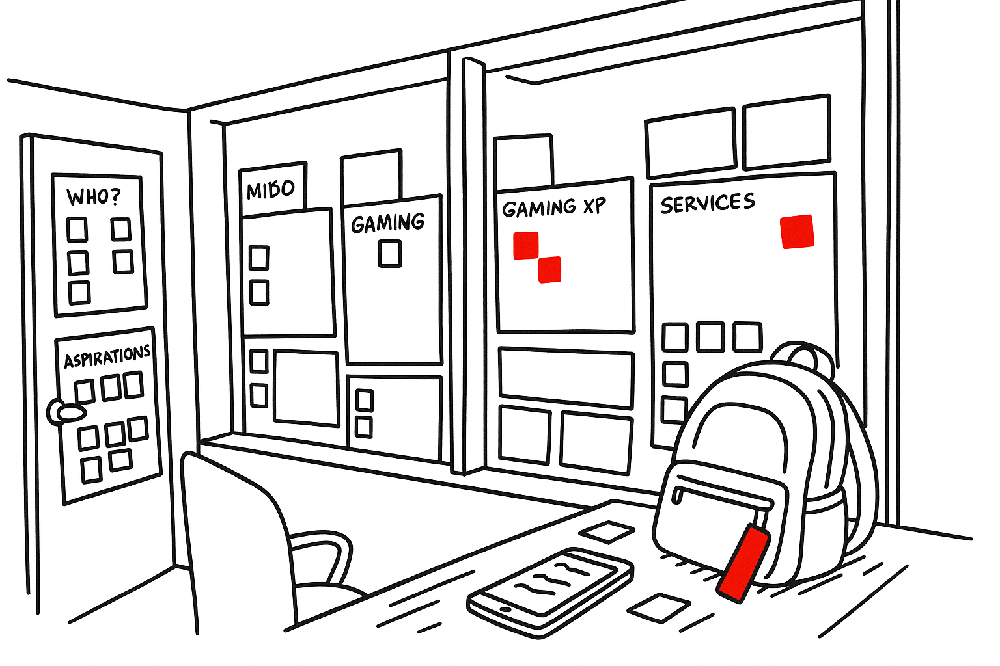
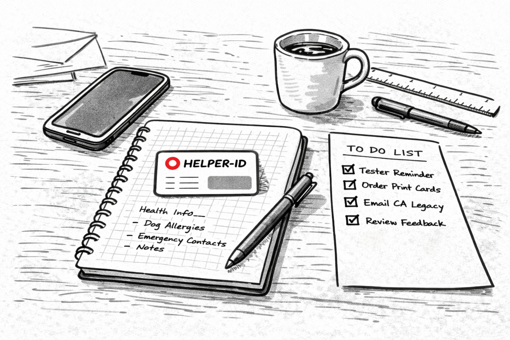

Helper-ID is a consent-driven emergency information platform built for getting help and being a Helper. Preparedness for people who care.
Helper-ID was born out of years of listening — listening to people who were doing their best to care for others, but kept running into the same frustrating roadblocks. As part of Empathy Lab, Inc., we've spent nearly a decade working at the intersection of design, behavior, and technology, helping organizations build more human-centered tools and services.
Over time, a clear pattern emerged: when something went wrong — a health emergency, a crisis, a moment of disorientation — the systems meant to support us often failed. People didn't have the right information when they needed it most. Helpers were willing, but disconnected. Important details lived in too many places, or nowhere at all.
"What if we could make helping someone easier, faster, and safer — without giving up your privacy or adding more complexity?"

Helper-ID is on a mission to empower everyday helpers — family members, friends, neighbors, teachers, caregivers, and even strangers — with the right tools to support others when it matters most.
We're building a simple, secure way to:
We believe in people over platforms, privacy over profit, and helpers over bystanders. Helper-ID isn't here to sell your data or lock you into a system — it's here to give you, and your circle of care, a better way to be ready.
We call it "preparedness for people who care."

In order to build a compassionate and thriving community of helpers, we must invest in people first and build platforms to support them.
It's your data. We're building a messenger to help you get your information into the right hands, at the right time — not a product to sell your profile.
Together, we can do amazing things. Empowering each of us to care for ourselves and each other moves us from uninformed individual bystanders to an informed community of helpers.
It's better to be safe than sorry. Together, we can prepare a little bit more so that we can enjoy more of our lives together. Prepare today, enjoy more tomorrows.
Helper-ID is maintained by a small, independent team focused on clarity, privacy, and long-term reliability. Founded by a passionate human with a background in behavioral psychology, industrial design, user experience research, and empathy-driven action.
By design, Helper-ID is intentionally built to function as a simple, functional, secure, and always reliable tool. The Helper community is the center.
Helper-ID isn't here to sell your data or lock you into a system — it's here to give you, and your circle of care, a better way to be ready.
Set up your Helper-ID in minutes. Free PDF, one-time purchase, or full membership.